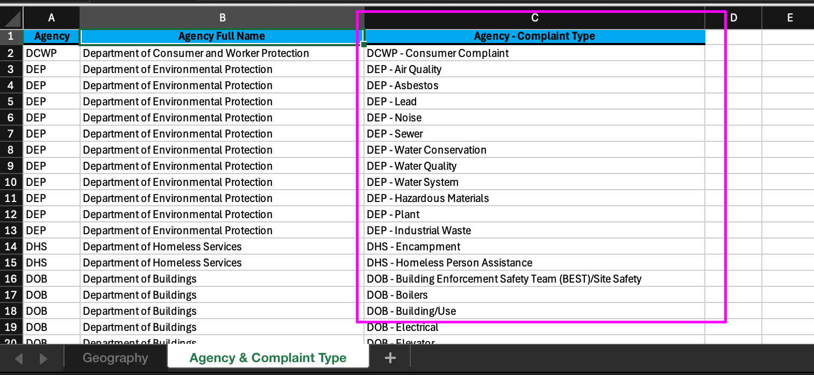

Class 3 Assignment: Latitude & Longitude, Decimal Numbers, Points in Polygons relationships, Filtering & 2D Plotting
Fall 2025 | NINT5380 CRN2189
Preamble

This week’s class session and independent assignment will encompass the following concepts, which will be previewed during the Class 3 lecture as well as the online group meeting Monday 09/22/25 at 8pm:
Before proceeding to your work on the class 3 assignment, pause and watch the lecture recording. In addition to Class 3 fundamentals, both terminology and some software items are discussed. Note that the lecture is titled ‘lecture 2’ although it is designed for class 3 content.

Visual Analogies for remembering Latitude vs Longitude:
- Lat/Lon points are determined by angular degree measurements based on a mathematical point at center of earth sphere (black dot) before they become points on a flat map:

- Latitude is analogous to rungs or steps on a ladder:

- Longitude is analogous to telephone pole stakes running east to west:

General Course Orientation Items for Week 4 | Class 3
Class 2 Reading:
This week’s reading will be from our course textbook Essentials of Geographic Information Systems textbook
Essentials of Geographic Information Systems textbook:
- Chapter 2, pages 29 - 43: Data, Information and Where to Find Them.
The Class 3 content quiz (opens Sunday 09/28/2025 7AM) will features 10 questions covering content in Chapter 2 noted above.
Assignment II Map: Large Scale Mapping of the NYC 311 Service Request Dataset
- In the following assignment steps the NYC’s 311 Service Requests for Covid Social Distancing is utilized as an example dataset. Generally the same steps apply to all 311 themes available. For this assignment, choose a theme and a time period filter for your own assignment submission.
There are many 311 data themes; spend some time picking one that you find engaging and want to see the spatial pattern of the data.
- In order to choose a theme, you must obviously know which themes are available. In the 311 dataset, themes are organized by
Complaint Typefirst; with subcategories that are listed asDescriptor. A third column is provided for the theme preview titledUnique Key, which in this case is a count of records perComplaint Type+Descriptor. To no one’s surprise,Noise - Residential+Loud Music/Partyhas the largest count at1,665,443records dating back to 2010.
At the following link you can download an Excel file that will list the Complaint Type and the agency that handles the Complaint Type:

To access the actual 311 data, the following link is utilized as the start point:
In this assignment, we will map the 311 data, conduct a spatial operation then visualize the results both in cartographic and chart outputs. Often GIS output will feature a combination of aspects, attributes or dimensions of a dataset. A recent example of this approach to data visualization from National Geographic - Monumental Undertaking shows first the temporal dimension of Confederate statues, followed by their spatial distribution:

The following mapping assignment utilizes the spatial distribution of Social Distancing complaints as an assignment example, alongside an aggregate count per NYC borough. By visualizing both the disaggregate data points and aggregate count, the final product allows a meaningful count in addition to spatial distribution alone.
To Start, first acquire the data in
.csvformat, then map it against the 5 boroughs in NYC. The Latitude and Longitude spatial attributes in the dataset will be used to transform the tabular dataset into a spatial dataset with geometry -.csvto.shp. Along the way, a total complaint count per borough will be determined, and finally a rate of complaint per borough. A map product is then developed that shows the pattern of the data and charts the relative complaint count per borough.To start, the following filter query and rate formula will be utilized in the assignment:
- To filter the 311 data just the Descriptor will be used, set to
Social Distancing. - In order to determine a square mile per borough:
shape_area * 0.00000003587006428 = square mile
- To filter the 311 data just the Descriptor will be used, set to
For filtering, a combination of Complaint Type and Descriptor can be utilized effectively to narrow results. In the following steps, images and video, a slightly older version of the 311 platform is shown. The interface has been updated recently and the filter tools are now located as a default at the bottom of the browser, under the dataset. All the same principles apply; just note the interface is different in some respects.
Data Acquisition:
- Navigate browser to NYC OpenData:

- Scroll down to the 311 Dataset link and click:

- Note that there are multiple 311 Service Request instances. Make sure to select the
Dataset, notData Lensinstance:

- Once selected, continue with
View Databutton selection:

- Apply a Filter based on query
Descriptor is Social Distancing:

- The resulting subselection would be 62,000 + records with the
Social DistancingDescriptor attribute:

- Download the subselection
.csvto a folder directory for Part II. Accept the default naming convention of the.csv:

- If desired, open the
.csvin Excel and navigate to right-end of the file. Here you will seeLatitudeandLongitude. These two columns will be utilized to read in the location data for the creating of geometry (points) within QGIS:

- Finally, download the Class3 map data folder (named c2). Here you will find the borough geometry, and a backup
.csvof the 311 data as of 01/29/21. Only use this.csvas testing data, not data for the assignment per se:

Data Acquisition Review:
Before proceeding to QGIS, make sure to review your filter conditions. Also if you are stuck on the filtering process, review the video below in this section.
Filter Condition 1: What will be the time dimension (
Create Date) of your mapping? Is a certain time duration important to the mapping, i.e. events tied to a certain NYC policy, natural disaster or weather period?Filter Condition 2: What will be the 311
Complaint Typetheme of your mapping?Filter Condition 3: As a further option, consider a filter on the
Descriptordimension to narrow yet further the return requests.Page/paper orientation and size: will your final output be landscape or portrait orientation? Either letter or tabloid, landscape or portrait is acceptable for this second mapping assignment.
To help with the filter conditions, review this short video below (Password = 311):

Data Organization within QGIS:
- Open QGIS and point the Data Source Manager to the
.csvservice requests utilizing the Delimited Text data source option. Make sure to populate the tool as seen below and rename the layer simply as311_SR:

- Next, load the borough boundary shapefile, and position the service requests atop the borough boundary and symbolize so that the the points are approximately
0.25size in black, and the boroughs are a light neutral color of your choice:

There will be some stray points outside NYC area. These are incorrect lat/lon data points wherein the lat/lon was recorded incorrectly in the 311 dataset. Disregard these points. Also now is the time to begin to save your .qgs file on a regular basis in order to avoid duplicate work in the event of a software crash.
You may notice that your data ‘shape’ is horizontally elongated compared to the image above. This is due to the fact that the data is cast within wgs84 coordinate system. We can change that easily so that the ‘shape’ is much more accurate. To do so, we will utilize the map projection designed for the NYC area (State Plane system). First click on the CRS button, lower right of Map Canvas. Once done, search for 3104 which is a short code for the correct map projection for NYC. Then click Add at bottom of tool window. The shape of the data will automatically update. This is a type of ‘on the fly’ projection; we are changing the Map Canvas coordinates, but we are leaving the actual .prj file on each of the data sources unchanged. This is a ‘quick and dirty’ yet efficient cartographic kludge (hack):


You may run into a CRS projection issue with the polygon feature for NYC boroughs. IF your features disappear from your Map Canvas as you perform an ‘on the fly’ projection for the data frame, the following video will solve this problem:
- Addressing the Missing CRS dilemma:

Next, we want know how many complaints exist per borough expressed in the following structured question:
- Which borough has the most ‘Social Distancing’ public complaint reports due to Covid-19 distancing mandates in New York City and State ?
- Which borough has the highest rate of public complaint reports based on square area (square miles) ?
For this second question, perhaps a more insightful query would be rate of public complaints per 10K population. Certainly we can answer this question also, but we would need population data which we will cover in depth in Class 4 - Thematic Mapping.
Utilize the Count points in polygon overlay operation to get a total count of complaint records per borough. This tool is available from the Main Menu:
Vector > Analysis Tools > Count Points in Polygon

- Populate the tool with the polygon and points ordered as follows:

- This operation will result in a new temporary layer
COUNT. Immediately export this new layer as a.shpinto your working directly, entitled311_borough:


.shpSee that the new .shp now contains a field column entitled NUMPOINTS in integer format (int8) - this is the count per borough.
- Next, calculate the complaints per borough and the rate of complaints per borough in the attribute table of the new
311_borough.shp. To do this navigate to the Toolbar and choose the Field Calculator tool:

Make sure
311_boroughis active in the layers panel. Create a new fieldsq.mileand populate with the following formula, using Fields and Values > shape_area dropdown:shape_area * 0.00000003587006428

This formula takes the current areal quantity in sq. feet and converts it to a sq. mile - a unit that is more appropriate to the size of the borough polygons.
- To complete, save the attribute addition; Toggle Editing to the off position and Save:

With the number of complaints per borough (
NUMPOINTS) and the sq. miles of each borough (sq.mile), a rate normalized to sq. area can be achieved. Again, open the Field Calculator and use the same process as above to Create a new field, but this time name the fieldrate.sq.miand use the following formula:"NUMPOINTS" / "sq.mile"Again, save the attribute addition; Toggle Editing to the off position and Save.
Open the attribute table and view the results. Its clear the rate of complaints per sq. mile in Manhattan is highest, even as its total count is lower than Brooklyn. The influence of the outer neighborhoods in Brooklyn is likely bringing down the rate in Brooklyn as a whole. In other words, the most populated areas of Brooklyn are likely on par with the rate of complaints per sq. mile as Manhattan.

If you are having problems with the Field Calculator at this stage of the assignment, the following video will walk through each step and may be helpful to get back on track:
- Creating Sq Miles & Rates with QGIS Field Calculator:

Visualizing the analysis results - plot and cartographic design:
With the analysis steps complete, we move along to cartographic design and output. We can augment the map design with a graphing feature to good effect. The following components will be featured in this final stage:
- Utilize QGIS Plugin architecture.
- Produce cartographic output; augment with graph design.
- Incorporate HTML elements into the Map Layout.
To start, make sure the
.qgsfiles is saved.
As there will be 60K points on this map, consider ramping down opacity and keep small symbol size. For the example map, opacity of points has been set at approx. 75%, and the size 0.25.
- Next, in order to incorporate graphing components into map layouts, we’ll use the Data Plotly plugin. This is one of the new features within QGIS 3.x. To install plugins, utilize the Plugins Main Menu:

- Search for DataPlotly. When the plugin loads, choose to Install plugin:

- Once installed, the following icon will be placed on the main Toolbar menu. Go ahead and click atop the icon to open the DataPlotly toolset:

- The first icon on the left (paintbrush and bucket) is the initial setup for graph. Here we choose a bar graph, the layer and the x and y axis. Importantly, the bar color, stroke color and width can be determined:

- Next, move to the icon below (gears) to set the title, axis labels. Once complete, click
Create Plotin the lower section of the tool window. This creates a preview of the graph:

- Finally, click the last icon to access the
HTMLexpression of the chart. This code can be highlighted, copied and then placed into a text editor (do not use MS Word. In the Class 2 lab, text editors will be discussed. There are many free, accessible editors).

With the code complete and copied safely to a text editor (not MS Word), Create a new layout instance, and
Save Projectfrom within Map Layout. Include the following elements:- Main Map elements - 311 Social Distance Request Locations + NYC Boroughs
- Map/Graph author tag (your name) + data source
- Map legend
- Embedded Data Plotly graph
The first three elements were covered generally in Class 1, Assignment 1 so you should have some familiarity with their creation and design. The fourth element - the Data Plotly graph - is a bit more challenging, but with some practice both valuable and efficient.
To start the graph, click the Add a New HTML to the Layout icon at left and draw out a element box on the Layout Canvas:

- The result is a new empty element both on the map and in the right items panel. Copy the
HTMLcode from the text editor into the HTML source section with the Source button activated. Click Return and the chart will appear on the Layout Canvas:

- The following video covers the Data Plotly plugin process from installing the plugin to final design:

Cartographic Design Suggestions:
- You will often want to toogle the stacking order of the various elements on the map page. For instance, negative space surrounding the map elements may partially obscure the graph and vice versa. You can toogle one atop the other in a desired order from the Actions Toolbar:

The font style is difficult to change within Data Plotly. Given this constraint, you can either use the same font as that of Data Plotly - Open Sans - or you can find a complimentary font style for your title, legend items, ect.
Download Open Sans font - free - Open Sans Font
Review the Assignment Example before finalizing your assignment. You are encouraged to experiment and choose a different approach than the example, but do indeed include all elements found in the example. Upload your PDF export to CANVAS assignment 3 submission location.

Video Guides:
- Addressing the Missing CRS delimma:
- Creating Sq Miles & Rates with QGIS Field Calculator:
311 Data Filtering:
- Use Password = 311 to access video:
- Data Plotly + QGIS - creating a bar plot for the assignment submission:
Assignment References:
Additional References:
Additional Class 2 Spatial related data/readings/articles:
A comprehensive, contemporary take on all things NULL Island
A concise definition of bounding box often used in conjunction with lat/lon.
Strava’s fitness tracker heat map reveals the location of military bases
Often lat/lon pairings are expressed in DMS (degree, minute, second) as opposed to Decimal format which is necessary & standard for digital mapping. Find out more on the expression of DMS vs. Decimal format.
To follow, a short tutorial on Degree|Minute|Second conversion to Decimal lat/lon expression:

Further, you can make the DMS>Decimal Degrees and vice versa on a point-by-point basis using an online converter like the following:
https://www.fcc.gov/media/radio/dms-decimal